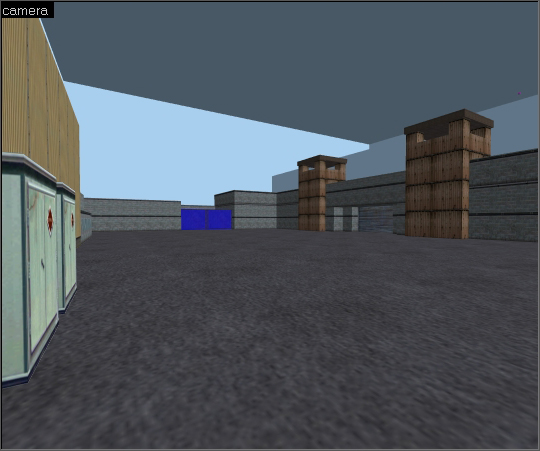
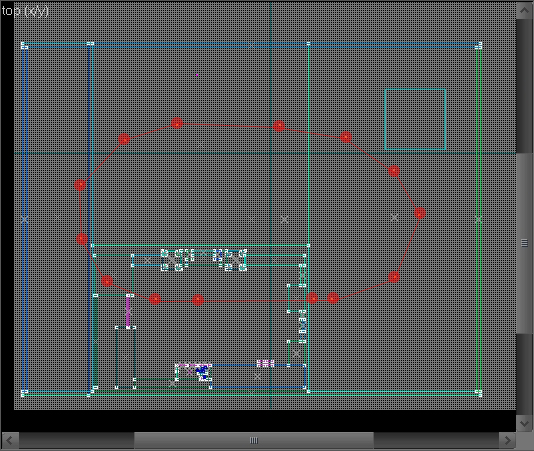
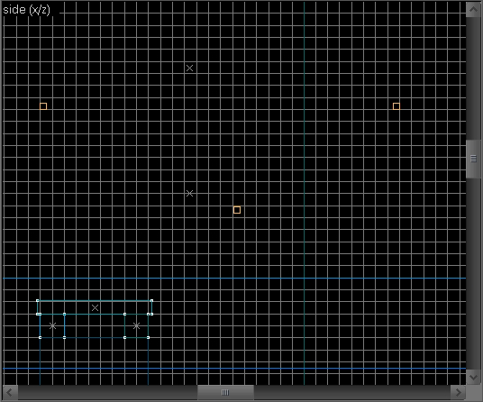
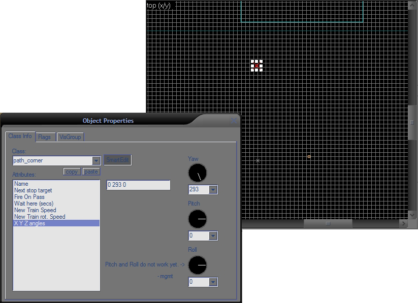
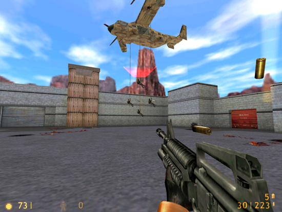

Si vous avez fait l'aventure Half-Life, vous vous souvenez sûrement de cette fameuse scène dans un grand puits de ventilation où un grand avion à hélices fait descendre des militaires en rappel ! :) Et il n'est pas rare de vouloir le refaire dans une map personnelle ! Cependant, on ne sait pas forcément comment s'y prendre.
Comment ça marche ? Comment faire suivre un chemin en boucle à un avion ? Comment faire ces militaires qui descendent le long d'une corde ?
Toutes ces questions, nous allons y répondre au cours de ce tutoriel. C'est très facile à faire, pas d'inquiétude. ;)
Avant de commencer, je préfère vous informer de certains points.
Tout d'abord, on n'utilisera pas de monster_grunt_repel, contrairement à ce que l'on peut penser. :) Il vous faudra obligatoirement placer des monster_human_grunt dans votre map. Si votre but est qu'à la base il n'y ait pas de militaires au sol mais que les premiers soient déposés par un avion, j'ai le regret de vous annoncer que c'est impossible. :( L'avion s'occupe en fait de remplacer les militaires qui seront morts. Il n'en déposera donc pas forcément à chaque fois. Seulement si un ou plusieurs militaires au sol ont été tués. ;)
Dernière chose à savoir : il est inutile de vouloir tester votre map avant d'avoir tout fini. Tant qu'on n'aura pas tout configuré, l'avion refusera de fonctionner, vous n'aurez droit qu'à un message d'erreur dans la console et rien du tout dans le ciel.
C'est tout ce qu'il vaut mieux savoir avant de s'attaquer au tutoriel. C'est donc parti. :)
Il faut commencer par créer notre map. :) On va la faire simple :
Commencez par créer un grand sol. Ensuite, fermez avec des murs et un plafond recouverts de la texture « sky » (pour le ciel). Mettez une light_environment et un info_player_start aux emplacements que vous voulez, réglez la luminosité comme vous le voulez. :) Placez de quoi se planquer pour le joueur, si possible dès le début, car comme dit dans la partie précédente, les militaires seront là dès le commencement de la map. Si vous voulez une partie jouable pas trop grande, prévoyez quand même une très grande place dans le ciel pour l'avion. ;) Après, vous pouvez améliorer comme vous le voulez, mettre des murs, des constructions... Voici ce que j'ai fait et sur quoi je travaillerai :

On va maintenant insérer l'avion et lui créer un chemin en boucle, avec un chemin alternatif pour quand il dépose des militaires. ;)
Insérez un monster_osprey (c'est l'avion ;) ) et placez-le où vous voulez dans votre map, près de là où il débutera (juste pour s'y retrouver, car en fait l'avion va commencer au premier path_corner que nous allons insérer). On va maintenant lui donner un chemin en boucle à faire. Insérez donc un path_corner où vous voulez, cette fois à l'endroit où vous voudrez faire commencer votre avion. Ce premier corner, il peut, selon votre choix :
se trouver dans la boucle ;
être en dehors de la boucle, il sert à insérer l'avion dans celle-là, en quelque sorte, lorsque vous voudrez fermer votre boucle, ce corner ne s'y trouvera alors pas.
Ouvrez les propriétés de votre path_corner (clic droit > Properties). Donnez-lui un nom dans « Name », par exemple : « corner0 » . Dans « Next Stop Target », mettez le nom du path_corner suivant sur lequel l'avion ira (pour vous y retrouver facilement, nommez vos corners à la suite de façon logique ; le premier path étant « corner0 », on va appeler le suivant « corner1 »).
Fermez la fenêtre de propriétés.
Copiez votre corner (sélectionnez-le et déplacez-le en maintenant la touche Shift enfoncée). Ouvrez les propriétés de ce nouveau path, donnez comme nom « corner1 » et comme path suivant « corner2 ». Continuez ainsi à dupliquer et renommer vos corners de façon logique en faisant un chemin en cercle (plus ou moins, vous pouvez personnaliser et faire un chemin plus compliqué, mais il ne faut pas que cela soit trop long sinon l'avion fera moins vite le tour et larguera donc les marines avec une fréquence plus faible). Si vous êtes habitués à faire des chemins pour des trains, il n'y a pas de problème possible, c'est la même chose ^^ .
Allez-y gaiement sur le nombre de corners, il vaut mieux faire des virages plus arrondis. ;)
Pour fermer votre boucle, raccordez le dernier path_corner au premier de la boucle (« corner0 » ou « corner1 » selon votre choix fait précédemment). Ça donne à peu près ça :

Notre boucle est terminée. Mais on n'a pas encore fini. ^^
Ces trois corners seront disposés en triangle, le corner du milieu étant le sommet du triangle, mais en bas, c'est un triangle à l'envers. ;) Ce triangle-là, placez-le à l'endroit où votre osprey déposera les marines. Il faut qu'il soit aligné avec la ligne droite de la boucle, mais plus bas. Une image étant plus facile à comprendre qu'un long discours, voici :

Pour les noms : on va donner le nom qui avait été laissé tout à l'heure au milieu de la ligne, on avait fait de la place pour, souvenez-vous. ;) Dans mon cas, j'ai « corner3 » et « corner5 » pour le début et la fin de ma ligne ; j'appellerai donc mes corners« corner4 ». Le premier sera nommé « corner4a », le deuxième, « corner4b », et le troisième, « corner4c ».
On a fini de créer notre boucle. :) Hélas, on n'en a pas encore fini avec les corners.
Vitesse
La vitesse a son importance dans tout ça ! Déjà, sachez que l'osprey n'a pas de vitesse par défaut, il faut la définir à chaque corner ! Et donc, pour ça, sélectionnez tous vos corners, ouvrez leurs propriétés, et dans l'onglet « New Train Speed », mettez une valeur de 600 (elle me semble assez appropriée, toutefois vous pouvez mettre une autre valeur si vous le désirez). Cependant, la vitesse n'est pas toujours la même : lorsque l'osprey descend pour déposer des marines, il freine. Au premier corner de la descente (avec le suffixe « a »), mettez une valeur plus faible, par exemple 300. Au corner avec le suffixe « b », celui où l'osprey s'arrête, il faut bien sûr mettre 0. Et au « c », quelque chose comme 300 aussi.
Orientation
Cette étape est assez répétitive... On va en effet s'occuper de l'orientation de l'osprey. À l'inverse du train, l'osprey ne s'oriente pas automatiquement, et n'accepte pas les path_track, on est donc obligé d'y aller manuellement. :( Ce qui signifie qu'à chaque corner, on va dire à l'osprey vers où il se tourne. Prenons notre premier corner.
Pour l'orientation, en fait, on va pointer notre radar vers le prochain corner.

Comme vous pouvez le constater, c'est très approximatif, j'ai pointé le plus précisément possible, mais ce n'est pas grave si ce n'est pas tout à fait exact.
Allez ensuite dans l'onglet « X Y Z angles ». L'angle du radar est sur l'axe Y, nous allons donc taper : 0 293 0 (c'est 293 dans mon cas, la valeur que vous devez entrer est bien sûr celle que vous avez trouvée ;)).
Il va maintenant vous falloir refaire cela pour chaque corner : définir une orientation avec le radar et la reporter sur l'axe Y.
Inclinaison
Quand l'osprey tourne, il se penche. Ça aussi, nous allons le faire, c'est quand même plus réaliste ! Ça se passe toujours dans l'onglet « X Y Z angles ». C'est l'axe Z qui est concerné, cette fois. C'est à vous de voir quel angle vous devez mettre : positif ou négatif, et bien sûr, s'il est grand ou petit ; cela dépend du virage ! Il reste l'axe X dont nous n'avons pas parlé : celui-ci va nous permettre de pencher l'avion vers l'avant ou l'arrière ; à faire lorsque l'avion freine et descend (il se penche en arrière) et quand il remonte en accélérant (il se penche en avant).
On va pouvoir s'occuper des militaires, maintenant. ;)
Dernier point : les militaires ! En effet, que serait tout cela sans les militaires. :)
Comme je l'ai dit dans la première partie de ce tutoriel, on n'utilisera pas de monster_grunt_repel mais des monster_human_grunt. Placez donc quelques monster_human_grunt (jusqu'à quatre) au sol dans votre map, si possible non loin de l'endroit où l'osprey dépose les militaires.
Et c'est tout ! Le plus dur aura été la partie « Chemin de l'avion ». Là, il n'y a plus qu'à placer des militaires et le tour est joué. Half-Life gère le reste tout seul comme un grand : établir le lien entre les militaires et l'avion, décider de quand il doit en déposer d'autres...
Et voilà ! Nous avons maintenant un bel avion qui vole et qui largue tout le temps des renforts (du moins jusqu'à ce que vous l'abattiez avec un lance-roquettes ^^ ). Dans le jeu, ça donne ceci :

Ce tutoriel est donc fini, vous savez désormais comment créer cette scène si particulière. :) J'espère que vous avez pris plaisir à lire ce tutoriel, que la compréhension a été facile, et surtout que cela vous a donné envie d'intégrer ce genre de scènes dans vos maps ! Cela met de l'ambiance et de l'activité, ainsi qu'un peu de difficulté ! ;)